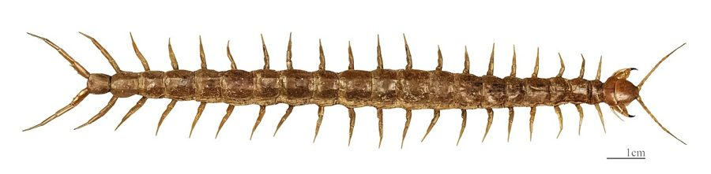

कनखजूराBanded Indian Centipede
Scolopendra morsitans · Scolopendridae · MYR-0001

- Scientific name
- Scolopendra morsitans Linnaeus, 1758
- Family
- Scolopendridae
- Hindi
- कनखजूरा / गोजर
- Status here
- native
- IUCN
- not evaluated
When to look कब देखें
Expected mainly in April, May, June, July, August, September, October, November.
Banded Indian Centipede / Tropical Centipede
Scolopendra morsitans Linnaeus, 1758 — Scolopendridae
कनखजूरा — पूर्वी UP का हर ग्रामीण घर इसे जानता है और सावधानी से सम्मान करता है। यह तेज़, ज़हरीला, और रात का शिकारी है। साथ ही तिलचट्टे, दीमक और कीड़ों को मारने वाला अनदेखा पहरेदार भी है — जिसे लोग डर से मार देते हैं पर जो असल में घर का रक्षक है।
Quick Identification त्वरित पहचान
| Feature | Description |
|---|---|
| Size | 8–15 cm long; among the largest invertebrates in UP homes and gardens |
| Colour | Banded dark brown/olive body with alternating yellowish crossbands |
| Head | Flat, reddish-orange to red; 4 ocelli (eye clusters) each side |
| Forcipules | Large, curved, reddish-orange "pincers" at front — venom-injecting modified legs |
| Legs | 21–23 pairs; yellowish; last pair elongated and backward-pointing (mimics antennae) |
| Activity | Nocturnal — rarely seen in daytime; found under stones, bark, or inside buildings at night |
Field rule: Banded brown-yellow body + flat head + red forcipules + 21–23 pairs of legs (one pair per segment) + fast movement + nocturnal = Scolopendra morsitans. The key distinction from millipedes: one pair of legs per body segment (centipede) vs. two pairs per segment (millipede).
Morphology आकारिकी
| Feature | Measurement |
|---|---|
| Body length | 8–15 cm (up to 18 cm in tropical conditions) |
| Body width | 0.5–1 cm |
| Leg pairs | 21–23 (always an odd number — never exactly "100") |
Segmentation: 21–23 body segments (tergites), each with one pair of legs. Total leg pairs typically 21–23 (always an odd number in Scolopendromorpha).
Head: Flattened, heavily sclerotized (hardened), reddish-orange. Antennae 17–20 segments. S. morsitans has small clusters of 4 ocelli on each side (compound eyes absent in most scolopendrids).
Forcipules: The first body segment is modified into a pair of forcipules — curved, claw-like structures with a venom duct opening at the tip. These are NOT jaws; they are modified legs. They are the biting/venom-injecting apparatus.
Tergites: Show the characteristic alternating yellow/dark banding. Banding can vary — some individuals nearly uniform brown; others strongly banded.
Last leg pair (anal legs): Elongated and antenna-like; point backward. This mimics a second set of antennae and confuses predators about which end is the head.
Venom and Bite ज़हर और काटना
Venom composition: Complex mixture — serotonin, histamine, cardiotoxic proteins, and phospholipases. Primarily designed to paralyze insect prey. In humans, causes intense localized pain, redness, and swelling — usually resolving in 24–72 hours.
Human bite effects:
- Intense burning pain at the bite site (two puncture marks visible)
- Swelling and redness radiating from the site
- Occasionally: fever, nausea, headache
- Rarely (children, severe cases): secondary infection, lymphangitis
- Fatalities: extremely rare; a few documented cases in India, mostly in children under 5
Field first aid: Wash wound; apply ice for 20 minutes; take an antihistamine if available; seek medical attention if fever develops or a child is bitten. Do NOT attempt to suck out venom — ineffective and risky.
Against prey: The venom rapidly immobilizes insects and small vertebrates. A centipede can subdue a cockroach 3× its size within seconds.
Ecological Role पारिस्थितिक भूमिका
Feeding: Generalist predator. Prey items include cockroaches (primary prey in buildings), termites (enters termite tunnels), crickets, beetles and other large insects, spiders, small lizards (house geckos), small frogs and toads (juveniles), and small mice (very large centipedes).
Hunting strategy: Active pursuit at night. Uses long antennae to detect vibrations and chemical signals. Speed is the primary weapon. Seizes prey with forcipules, injecting venom within 0.5 seconds.
Ecological role: Important controller of cockroach and termite populations in and around rural buildings; controls other insects in agricultural soil and compost. Prey for garden lizards (Calotes), Indian Rat Snake, kites (when on surface), and mongoose.
Life Cycle / Phenology जीवन चक्र
| Month | Event |
|---|---|
| Apr–Jul | Breeding; female finds sheltered, moist microhabitat |
| Apr–Jul | 15–35 eggs per clutch; female coils tightly around egg cluster during incubation (40–60 days) |
| Apr–Aug | Female guards eggs; does not feed during brooding |
| Year-round | Adults active (warm months); juveniles appear after hatching |
Hatchlings: Emerge with full complement of legs; miniature versions of adults (1.5–2 cm). Development: multiple moults over 2–3 years to reach adult size; centipedes continue moulting throughout life. Lifespan: 5–7 years in the wild; up to 10 years in captivity.
Agricultural / Human Relevance कृषि एवं मानव उपयोग
Pest control service: In rural eastern UP, the centipede is an unrecognized pest controller. Households with centipedes typically have lower cockroach infestations. In storage areas, centipedes hunt the insects that damage grain.
Fear vs. reality: The centipede is widely feared — often killed on sight. This is ecologically counterproductive: a centipede in a house is effectively free pest control. The bite, while painful, is almost never dangerous to adults.
In agricultural soil: Centipedes in field soil and compost heaps hunt the larvae of soil-dwelling beetles, fly larvae, and other crop-damaging invertebrates.
Cultural attitudes: कनखजूरा is used as a term of abuse in UP dialects — its many legs, fast movement, and venomous reputation make it universally disliked. This hostility means centipede populations may be artificially suppressed in areas of high human density.
Expected Locally स्थानीय रूप से अपेक्षित
Not a field record. Written from published accounts for eastern Uttar Pradesh. No confirmed local sighting yet — if you have seen it, that is what the atlas needs.
अभी तक स्थानीय पुष्टि नहीं। यह विवरण प्रकाशित स्रोतों से है, किसी अवलोकन से नहीं।
In Basti district, the Banded Indian Centipede is regularly encountered in rural homes — found under stored items, between brickwork, and in thatched areas at night. Post-monsoon (August–October) is when they are most commonly seen in and around houses, likely due to flooding of soil microhabitats. Farmers occasionally see them emerging from disturbed soil during ploughing. The species is universally feared and almost always killed on sight, though most bites in eastern UP occur when someone accidentally steps on one barefoot at night — reinforcing the importance of wearing footwear after dark.
Distribution वितरण
Global range: Scolopendra morsitans is the most widely distributed centipede species in the world — circumtropical in distribution, found in Africa, South Asia, Southeast Asia, the Americas, and many island groups. It has been extensively dispersed by human trade routes.
In India: Found throughout the country in warm-climate zones; one of the most commonly encountered large centipedes in homes and agricultural areas.
In Uttar Pradesh: Present throughout the state wherever suitable microhabitats exist — agricultural fields, old buildings, gardens, and forest margins.
In Basti district / eastern UP: Commonly encountered year-round in warm months (April–November) in and around rural buildings and agricultural field margins.
Research Questions शोध प्रश्न
- What time of night does the centipede become active? — Set a red-light torch at 9 PM, 11 PM, 1 AM, 3 AM for 30 minutes each and record sightings over 5 consecutive nights.
- Are centipede sightings more common after heavy rain? — Record sightings before and after monsoon showers over one season.
- What prey species are found near centipede shelters? — Inspect under stones where centipedes shelter; document what other invertebrates are present in the same microhabitat.
- Is egg-brooding behaviour observable in your area? — Check sheltered moist spots in April-June; a coiled centipede covering eggs is a rare but rewarding find.
- Do rural buildings with centipedes have fewer cockroaches? — Survey 10 rural houses: presence/absence of centipede, and cockroach count from a 5-minute search.
Similar Species मिलती-जुलती प्रजातियाँ
| Species | How to distinguish |
|---|---|
| Scolopendra hardwickei | Larger (15–20 cm); more vivid orange-and-black; less common in eastern UP agricultural areas |
| House Centipede (Scutigera coleoptrata) | Much thinner; extremely long, spider-like legs; no banding; very fast; harmless |
| Millipede (Trigoniulus corallinus, MYR-0002) | Two pairs of legs per segment (vs. one pair in centipedes); slow-moving; no venom; curls into spiral; detritivore |
Taxonomy & Classification वर्गीकरण
Original description. Scolopendra morsitans was described by Carl Linnaeus in 1758 in Systema Naturae, 10th edition. It is the type species of the genus Scolopendra Linnaeus, 1758 — confirmed by the ICZN in 1957 (Opinion 454). The species name morsitans is Latin for "biting," referring to its venomous bite. The genus name Scolopendra is derived from the Greek skolopendra, an ancient name for centipedes.
Subspecies. No subspecies are formally recognised. However, given its circumtropical distribution and wide morphological variation in banding and colour, it is possible that the current S. morsitans concept represents a species complex requiring molecular resolution.
Family and order placement. Belongs to the order Scolopendromorpha, family Scolopendridae. The family Scolopendridae contains approximately 80 genera and over 700 species of large tropical centipedes. The genus Scolopendra contains approximately 90 species. Scolopendridae are distinguished from other centipedes by having 21 or 23 pairs of legs (always odd) and a complex venom delivery system through modified forcipules.
Phylogenetic notes. Molecular phylogenetics confirms that Scolopendra morsitans is a member of a large Old World clade within Scolopendridae. Its circumtropical distribution suggests ancient dispersal capacity, later accelerated by anthropogenic transport. Forensic molecular studies suggest that what has been called S. morsitans may include several cryptic species distinguished by genetic rather than morphological characters.
IUCN status rationale. Scolopendra morsitans has not been formally assessed by the IUCN Red List. As a circumtropical, highly adaptable species associated with human habitation and agriculture, it is not considered of conservation concern.
Photo Gallery फोटो गैलरी
Atlas Connections संबंधित प्रजातियाँ
- SFL-0001 Termite — primary prey; centipede enters termite tunnels at night and hunts workers
- REP-0002 Indian Rat Snake — predator of centipedes encountered on the surface at night
- MYR-0002 Rusty Millipede — superficially similar; completely different ecology (predator vs. detritivore)
- REP-0001 Garden Lizard — preys on young centipedes; both share agricultural field and garden habitat
References संदर्भ
- Linnaeus, C. (1758). Systema Naturae, 10th edition. Laurentii Salvii, Stockholm.
- Attems, C. (1930). Myriopoda — Scolopendromorpha. Das Tierreich 54. Walter de Gruyter, Berlin.
- Jangi, B.S. (1984). Centipede venoms and poisoning. In: Handbook of Natural Toxins, Vol. 2. Marcel Dekker.
- Edgecombe, G.D. & Giribet, G. (2007). Evolutionary biology of centipedes. Annual Review of Entomology, 52: 151–170.
- Zoological Survey of India. Fauna of Uttar Pradesh — Myriapoda. ZSI, Kolkata.
- GBIF Occurrence Data — Scolopendra morsitans, India (2026). GBIF taxon key: 2634563.
Source file: species/fauna/myriapods/indian_centipede.md